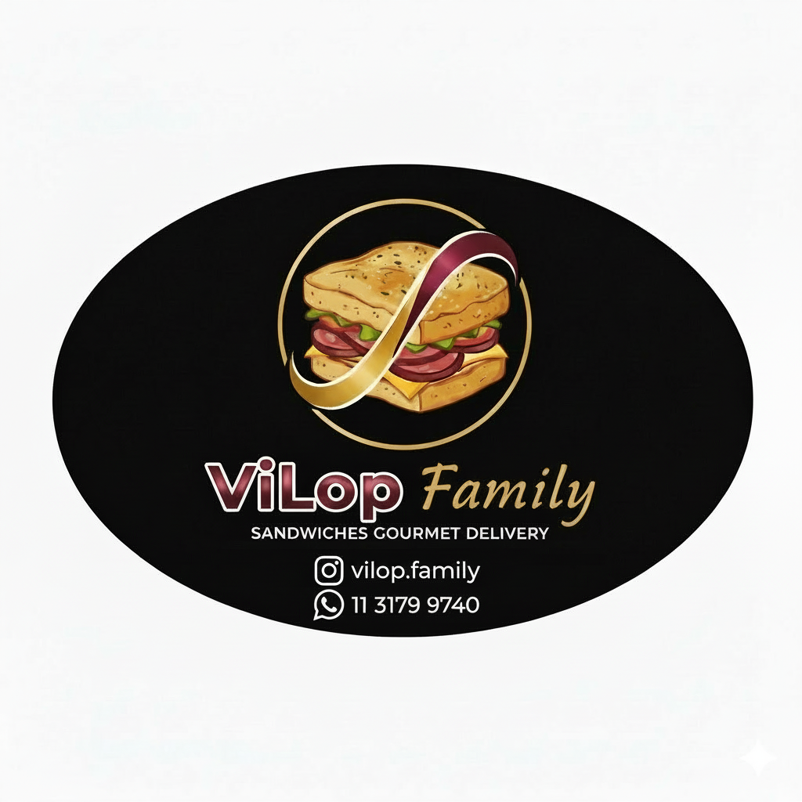

Carta y tapeo
Focaccias listas para porcionar
Ideales para paneras, tablas, acompañamientos y servicio de mesa con una impronta más cuidada.

Focaccias Artesanales • Para Gastronomía
Un catálogo de focaccias artesanales pensado para cartas de tapeo, paneras premium, brunch y servicio gastronómico con identidad propia.
Trabajamos con producción por pedido, variedades clásicas y líneas especiales para que cada local pueda elegir la selección que mejor encaja con su propuesta.
Solicitá catálogo mayorista, muestra y condiciones comerciales por WhatsApp al +54 9 11 3179 9740.
La cotización se arma según formato, variedad y volumen. Ideal para bares, cafeterías, restaurantes, wine bars y espacios de eventos.
Una propuesta simple de implementar en cocina y con perfil artesanal para sumar valor a la carta.
Carta y tapeo
Ideales para paneras, tablas, acompañamientos y servicio de mesa con una impronta más cuidada.
Cocina
Funcionan como base para tostados, brunch y platos especiales sin alejar el foco de la focaccia.
Esquema comercial
Armamos la propuesta según variedad, formato y frecuencia para adaptarla a la dinámica de cada local.
Selección de líneas clásicas y especiales para construir una oferta consistente y diferencial.
Presentación entera o media pieza. La lista mayorista se cotiza según combinación de sabores y volumen.
Sabores de rotación constante para barra, panera y cocina.
Variedades con perfil más distintivo para una propuesta de autor.
FORMATOS SUGERIDOS PARA EL SERVICIO:
Porcionada para acompañar vermú, vino, tablas o servicio de mesa.
Variedades clásicas y especiales para compartir, cubetear o servir tibias.
Focaccias listas para desarrollar tostados, platos del local o servicio compartido.
Opciones versátiles para vitrinas saladas, brunch y propuestas rápidas.
Sabores nobles, fáciles de integrar y pensados para rotación constante.
Variedades con perfil más distintivo para sumar firma y diferenciación.
Coordinamos frecuencia, selección y volumen para cada punto de venta.
Contacto
Focaccias artesanales para bares, restaurantes, cafeterías y eventos.
WhatsApp: +54 9 11 3179 9740
Consultar propuesta comercial, muestras y esquema de abastecimiento.